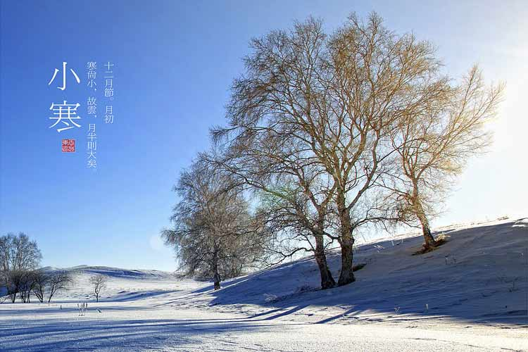
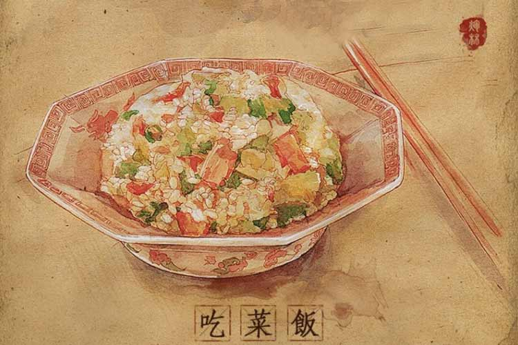
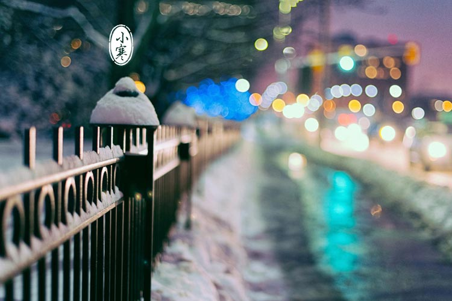

一年中最寒冷的日子是哪一天？这个不好说，只要这一年没有过完，都不能确定明天会不会更冷。甚至对于一些人来说，也许分手的那一天就是一年中最寒冷的日子……为了解决这个争议，我们中国千百年来劳动人民的智慧结晶给出了一个官方说法：农历二十四节气中的第23个节气——小寒，标志着季冬时节的正式开始，进入一年中最寒冷的日子。你说神奇不神奇，连天气预报都报不准的气温变化，竟被古人摸了个八九不离十，根据中国的气象资料，小寒是气温最低的节气，只有少数年份的大寒气温低于小寒的。
每年的1月5日或6日，太阳到达黄经285°的时候，小寒节气就开始了。大家都知道“三九四九”是最冷的时候，“三九”多在1月9日至17日，也恰在小寒节气内。华北一带有“小寒大寒，滴水成冰”的说法，虽然不押韵，好在写实。而江南一带有“小寒大寒，冷成冰团”的说法，可谓押韵又写实。
根据小寒的冷暖情况预示未来天气的谚语不少。如“小寒天气热，大寒冷莫说”、“小寒不寒，清明泥潭”、“小寒大寒寒得透，来年春天天暖和”、“小寒暖，立春雪”、“小寒寒，惊蛰暖”等。根据小寒节气阴雨（雪）情况，预示未来天气的谚语有：“小寒蒙蒙雨，雨水还冻秧”、“小寒雨蒙蒙，雨水惊蛰冻死秧”。
进入小寒，涮羊肉火锅、吃糖炒栗子、烤白薯成为时尚。俗语说“三九补一冬，来年无病痛”，说的就是冬令食羊肉调养身体的做法。有两个格外重视小寒节气和吃吃吃的城市，我们一起来看一下：
【南京-吃菜饭】到了小寒，老南京一般会煮菜饭吃，菜饭的内容并不相同，有用矮脚黄青菜与咸肉片、香肠片或是板鸭丁，再剁上一些生姜粒与糯米一起煮的，十分香鲜可口。其中矮脚黄、香肠、板鸭都是南京的著名特产，可谓是真正的“南京菜饭”，甚至可与腊八粥相媲美。
【广东-吃糯米饭】广州传统，小寒早上吃糯米饭，为避免太糯，一般是60%糯米40%香米，把腊肉和腊肠切碎，炒熟，花生米炒熟，加一些碎葱白，拌在饭里面吃。广东人很讲究食疗。小寒因处隆冬，土气旺，肾气弱，因此，饮食方面宜减甘增苦，补心助肺，调理肾脏。
上面讲了这么多好吃的，可要提醒大家，冬天容易犯懒，但是也不能太懒。民谚曰：“冬天动一动，少闹一场病；冬到懒一懒，多喝药一碗。”这说明了冬季锻炼的重要性。在这干冷的日子里，宜多进行户外的运动，如晨早的慢跑、跳绳、踢毽等。还要在精神上宜静神少虑、畅达乐观，不为琐事劳神，心态平和，增添乐趣。在此节气里，患心脏病和高血压病的人往往会病情加重，患“中风”者增多。中医认为，人体内的血液，得温则易于流动，得寒就容易停滞，所谓“血遇寒则凝”，说的就是这个道理。所以保暖工作一定要做好，尤其是老年人。
1、小寒是农历二十四个节气中的第二十三个节气，代表一年中最寒冷的日子来临，一般在每年1月5日或6日；
2、小寒之后尤其要注意保暖，吃一些温补性的食物。